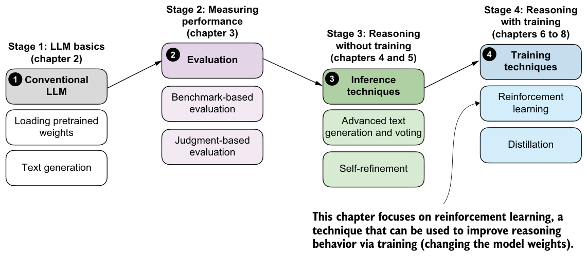
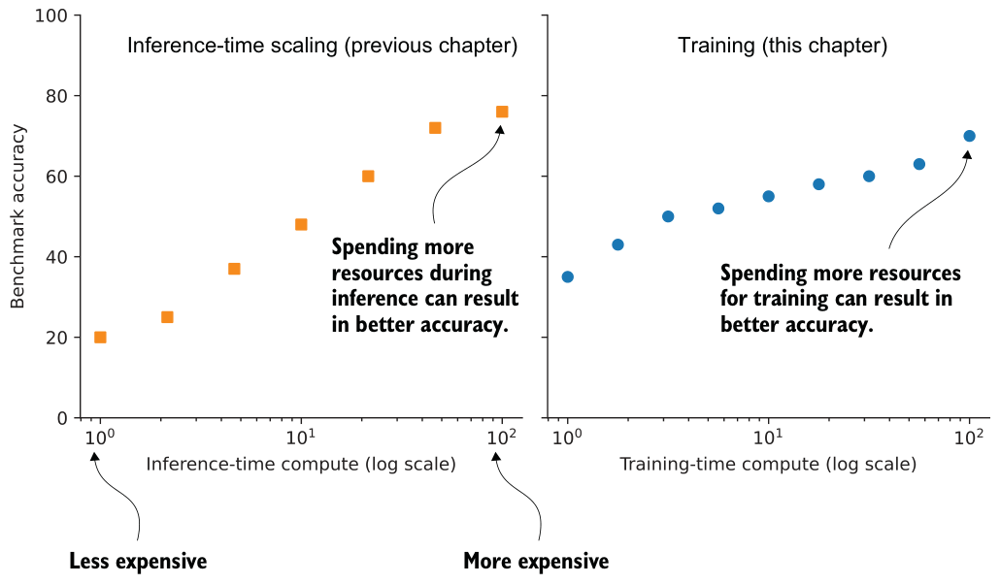
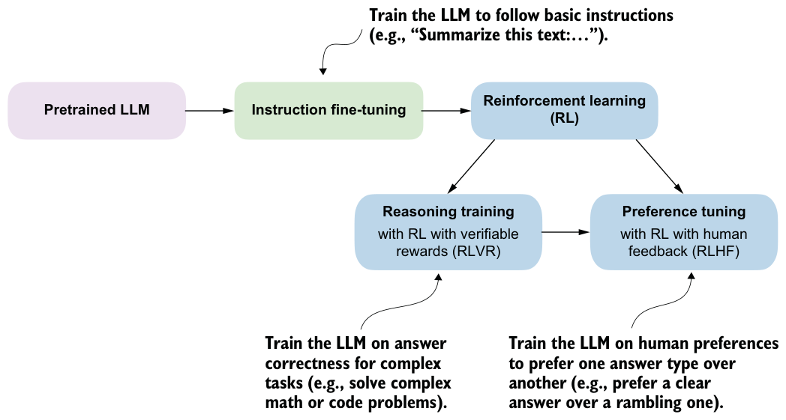

Summary
- Self-refinement extends the inference-time scaling ideas from the previous chapter by iteratively critiquing and improving a single answer, rather than relying on multiple independent samples as in self-consistency.
- A simple rule-based scoring function ranks model outputs by rewarding extractable final answers and shorter, more economical completions.
- Next-token scoring quantifies model confidence by converting logits into normalized probabilities and combining these into a sequence-level likelihood.
- Log probabilities replace raw probabilities to avoid numerical underflow and to turn products over many tokens into stable sums and averages.
- These scoring functions are useful beyond self-refinement, such as for breaking ties in self-consistency or implementing best-of-N selection strategies.
- The self-refinement procedure consists of three stages: generating an initial draft, producing a short critique and fix plan, and generating a revised answer. A reusable refinement function automates the self-refinement workflow across multiple iterations (refinement rounds), and it can use score-based acceptance to keep only revisions that do not degrade the computed answer’s score using one of the scoring functions we developed earlier.
Training reasoning models with reinforcement learning
This chapter covers
- The difference between reinforcement learning with human feedback and reinforcement learning with verifiable rewards
- Training reasoning LLMs as a reinforcement learning problem with task-correctness rewards
- Sampling multiple responses per prompt to compute group-relative learning signals
- Updating the LLM weights using group-based policy optimization for improved reasoning
Reasoning performance and answer accuracy can be improved both by increasing the inference compute budget and by using specific model-training methods. This chapter, as shown in figure 6.1, focuses on reinforcement learning (RL), the most commonly used training method for reasoning models.
We’ll first go through a general introduction to RL in the context of LLMs. Then we’ll discuss the two most common RL approaches used for LLMs.

6.1Introduction to RL for LLMs
Inference-time scaling and training-time scaling are two distinct approaches for improving the reasoning performance of LLMs, as illustrated in figure 6.2. Inference-time scaling increases accuracy by spending more computation per generated answer, whereas training-time scaling improves accuracy by investing additional computation during training. This chapter focuses on training-time scaling.
While figure 6.2 presents inference-time scaling and training-time scaling as separate concepts, in practice they can be combined. For example, after improving a model’s reasoning capabilities through RL, which is the core focus of this chapter, inference-time-scaling techniques such as those introduced in chapters 4 and 5 can be applied to further boost performance.
RL focuses on how models learn from sequences of actions and their outcomes, with classic examples being agents trained to play chess, Go, or video games. While RL for LLMs builds on this research, it differs in important ways and often resembles familiar LLM-training techniques. Since this book focuses on language models, we will not cover RL in general but instead focus on how RL is applied in LLM training.
So what does RL mean for LLMs in practice? At a high level, RL is typically applied as a post-training stage on top of a pretrained language model, sometimes after instruction fine-tuning. This setup is illustrated in figure 6.3.
There are two common RL stages for LLMs: reasoning training and preference tuning. As shown in figure 6.3, RL is usually applied after instruction fine-tuning, and preference tuning often follows reasoning training.


As the DeepSeek team demonstrated in its DeepSeek-R1 work, though, reasoning-focused RL can also be applied directly to the pretrained base model, skipping both instruction fine-tuning and preference tuning. The resulting model is generally weaker in reasoning accuracy than one that goes through the full training pipeline, but it still exhibits clear, robust reasoning behavior. More importantly, applying reasoning training directly to the base model avoids mixing the effects of multiple training stages, making it easier to attribute any observed improvements specifically to the reasoning training itself.
Before getting further into the details of how RL is implemented for LLMs, let’s briefly compare RL with pretraining at a conceptual level. During pretraining, an LLM is trained to predict the next token in large amounts of text, and many of the model’s core abilities and emergent behaviors (such as answering knowledge-based questions and following simple instructions) develop at this stage.
Applying RL on top of a pretrained model is attractive because it lets us optimize whole outputs, such as answer correctness or preferences, rather than individual tokens and next-token prediction. In this sense, pretraining mainly builds knowledge, while RL shapes how the model uses that knowledge, including its reasoning behavior.
As outlined in figure 6.4, the next two subsections provide a high-level overview of how RL is used in LLM training, and they set the context for the method we’ll use in the rest of this chapter.